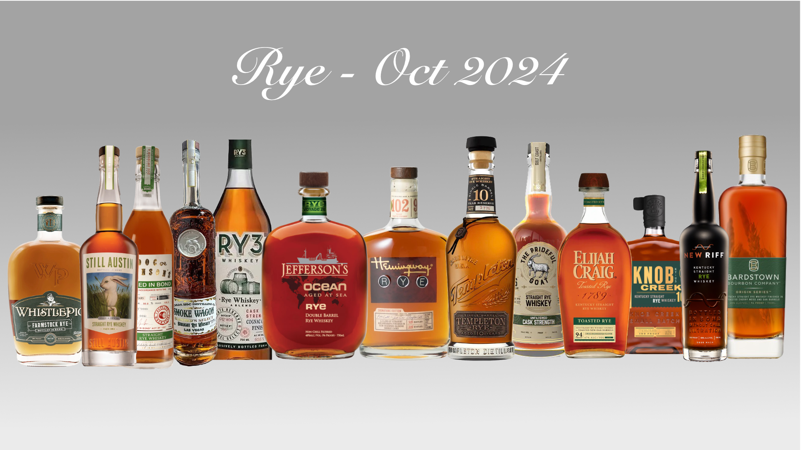

A private community of whiskey enthusiasts gathering quarterly for exceptional tastings
A close-knit community of whiskey enthusiasts gathering quarterly for exceptional tastings
Founded in 2018, the Backyard Whiskey Club began as a small group of friends sharing their passion for fine spirits. What started as casual backyard gatherings has evolved into a private community of 25 dedicated members who meet quarterly to explore the world's finest whiskeys in an intimate, educational setting.
Get ready for our upcoming quarterly tasting event
7:00 PM - 9:30 PM
The Backyard Patio
Join us for an evening exploring the bold and spicy world of rye whiskey. We'll taste through a carefully curated selection of premium ryes, from classic American expressions to innovative craft distillery offerings.

Vermont Rye - Rich and complex with notes of vanilla and oak
Utah Rye - Spicy and bold with a smooth finish
Pennsylvania Rye - Classic and affordable with great character
Relive our previous quarterly tastings and discover what we've explored
12 Members Attended
A festive evening featuring premium single malt scotches perfect for the holiday season. We explored the rich, warming flavors that make winter tastings so special.
Member favorite was the Macallan 18, with its rich dried fruit and spice notes. The Lagavulin brought the perfect smoky contrast for the winter evening.
15 Members Attended
An exploration of the delicate and refined world of Japanese whisky, featuring both classic expressions and limited releases.
The Hibiki Harmony was a standout with its complex blend of fruit and floral notes. Members appreciated the craftsmanship and attention to detail in Japanese whisky making.
18 Members Attended
A celebration of American bourbon with a focus on different mash bills and aging techniques. Perfect for a warm summer evening.
The Pappy Van Winkle was the clear winner, though the Four Roses offered incredible value. Great discussion about the impact of different barrel char levels.
Questions about our private tastings or membership inquiries
The Backyard Patio
Private Residence
Quarterly Tastings
March, June, September, December
club@backyardwhiskeyclub.com
Our private club maintains a small, intimate membership of 25 dedicated whiskey enthusiasts. Membership is by invitation only, and we focus on creating meaningful connections through shared appreciation of fine spirits.
Note: We currently have a waitlist for new members. If you're interested in joining our community, please contact us to learn more about our membership process.